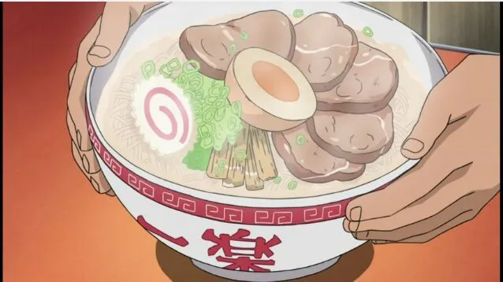

Home
Naruto Ramen

Description
This is a flavorful bowl of ramen inspired by the beloved character Naruto
Uzumaki. It's perfect for those who love a bit of heat and bold flavors.
Ingredients
- 100g of ramen noodles
- 100g sliced pork belly
- 2 cups of miso broth
- 1 teaspoon of sesame oil
- 2 boiled eggs, halved
- Green onions for garnish
Instructions
- Cook the ramen noodles according to the package instructions.
- In a bowl add miso broth and sesame oil.
-
Once the noodles are cooked, drain them and add them to the bowl with
the broth.
-
Top the ramen with sliced pork belly, boiled eggs, and green onions.
- Serve hot and enjoy your delicious bowl of Naruto Ramen!